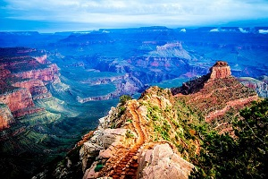
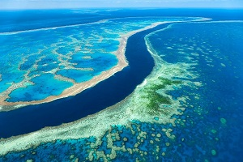
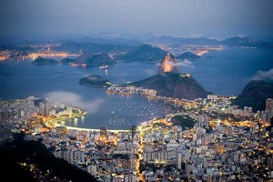
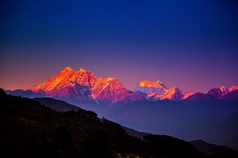
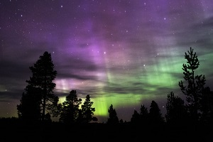
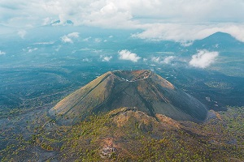
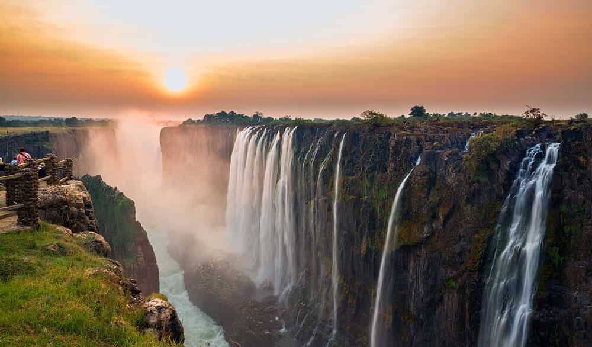

Located in Arizona, the Colorado Plateau was once the floor of a shallow sea.where today one can still find fossilized snails,
corals and shellfish from 20 million years ago,
It is the world's most spectacular canyon.The Grand Canyon creates its own weather.

Australian Great Barrier Reef is the world's largest living structure.
It supports incredible biodiversity. Nearly 10% of world's fish species inhabit the reef.
It is one of the world's most threatened ecosystems due to coral bleaching caused by ocean acidification.

The Harbor of Rio De Janeiro (Guanabara Bay) means the January River. It is located in southeast Brazil.
It was named so by the Portuguese explorer,
Gonçalo Coelho who discovered it on January 1, 1502 on his cartographic journey of South America.

Located in the Himalayas and straddling the border between Nepal and China's Tibet Autonomous Region,
Mount Everest is the tallest mountain in the world measured from the sea level. It has an altitude of 29,029 ft (8,848 m).

These colorful patches, arcs, rippling curtains or shooting rays in shades of green, pink, red, yellow, blue, and violet appear above the north pole,
and are called the Aurora borealis.The same phenomenon is called Aurora australis in the south, meaning dawn of the north and south.

Standing almost 10,000 feet tall in West-central Mexico,the cinder cone volcano, Paricutin,
is a natural world wonder for being the youngest volcano.The birth of the volcano witnessed by humankind in 1943.
It was active for a while, now extinct.

Victoria Falls, located on the Zambezi River on the Zimbabwe-Zambia border, isthe grandest waterfall in the world at 5,500 feet at
its widest point and with a drop of 355 feet.
It is the world's largest falling sheet of water.